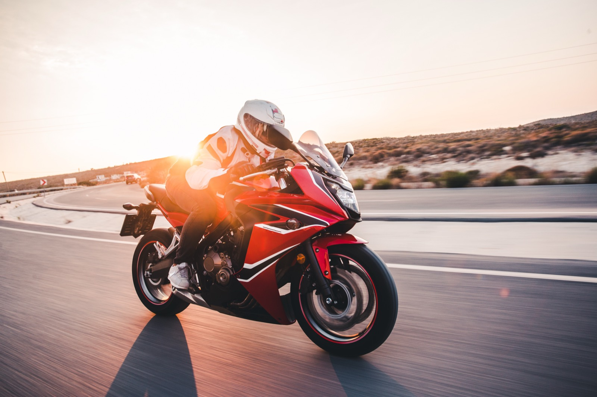

La politique de sécurité routière s'appuie sur des objectifs et des données chiffrées. Ce module présente les enjeux prioritaires et les chiffres clés de l'accidentalité.
Introduction
La politique de sécurité routière s'appuie sur des objectifs et des données chiffrées. Ce module présente les enjeux prioritaires et les chiffres clés de l'accidentalité.
Objectif 1Situer les objectifs nationaux et internationaux.
Objectif 2Connaître les enjeux prioritaires du DGO.
Objectif 3Repérer les chiffres clés de l'accidentalité.
Comment ça marche : cliquez sur les cartes pour découvrir leur contenu, puis répondez à la question pour déverrouiller l'étape suivante.
Un objectif mondial et national
La France s'inscrit dans un cadre international fixant des ambitions chiffrées pour réduire le nombre de tués et de blessés graves sur les routes.
Cliquez sur chaque carte pour en savoir plus.
🔒 Question de déverrouillage
Quel est l'objectif de la décennie d'action 2021-2030 ?
Les enjeux du DGO 2023-2027
Le Document Général d'Orientations (DGO) 2023-2027 identifie des enjeux prioritaires sur lesquels concentrer l'action des IDSR.
Cliquez sur chaque carte pour en savoir plus.

Enjeu n°1 du DGO : les deux-roues motorisés — 697 tués en 2025, soit 21 % de la mortalité routière pour une part très faible du trafic (ONISR, Bilan 2025).
Image Adobe Stock — licence standard.
🔒 Question de déverrouillage
Lequel de ces thèmes est un enjeu prioritaire du DGO 2023-2027 ?
Les chiffres de l'accidentalité
Les données statistiques permettent de mesurer la réalité de l'insécurité routière et d'orienter les actions de prévention.
Cliquez sur chaque carte pour en savoir plus.
Évolution de la mortalité routière en France métropolitaine
Source : ONISR, Bilan 2025 (données définitives, publié le 29/05/2026). Année de référence de la décennie 2020-2030 : 2019.
Répartition des personnes tuées par mode de déplacement (métropole, 2025)
Source : ONISR, Bilan 2025. Les occupants de voiture représentent 47 % des tués ; les deux-roues motorisés 21 %.
2 711accidents corporels en Hauts-de-France (2024)
224personnes décédées en Hauts-de-France (2024)
3 492blessés en Hauts-de-France (2024)
🔒 Question de déverrouillage
En 2024, combien de personnes environ ont perdu la vie sur les routes de France métropolitaine ?
Synthèse — vérifiez vos acquis
Répondez aux deux questions pour valider le module.
🔒 Question 1
Quel est l'objectif chiffré de la France pour 2030 ?
🔒 Question 2
Citez un enjeu prioritaire du DGO 2023-2027.
✓
Module terminé
Vous connaissez les enjeux et les chiffres clés de l'accidentalité. Prochaine étape conseillée : les politiques de sécurité routière.
Source des contenus : documentation du programme IDSR (formation initiale, Pôle d'appui régional de la sécurité routière — DREAL Hauts-de-France) et securite-routiere.gouv.fr / ONISR.